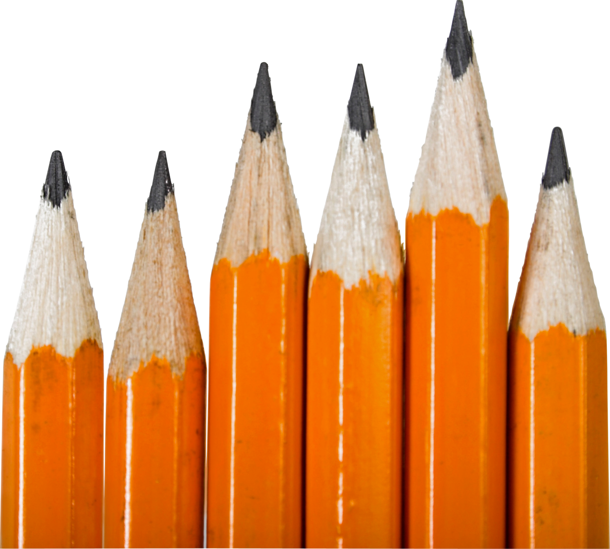

pencil
eraser

This will be needed to actually draw, you can use normal pencils and/or mechanical pencils
This will be used to remove any parts of the drawing you dont like, it can also be used to add tone to the drawing. You can use a normal eraser or a kneaded eraser
This will keep your pencil sharp which is important as it will allow for more precise and detailed drawing, these are used if you are not using mechanical pencils
This is used to actually draw onto